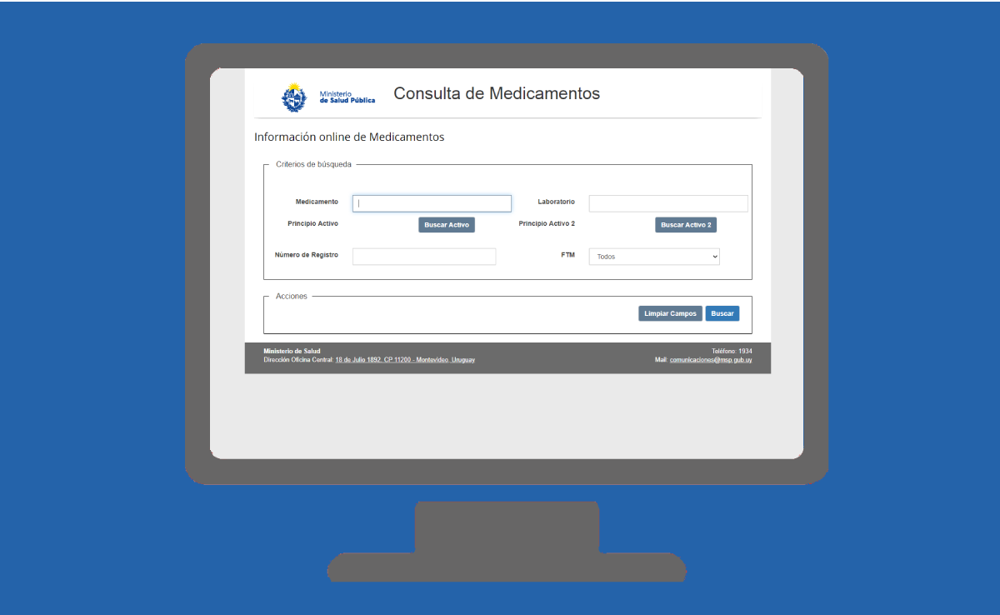

Portal de Medicamentos
Descripción
Página web de acceso público que permite visualizar la información de todos los medicamentos incluidos en el Diccionario Nacional de Medicamentos y Afines.
Información que aporta
Facilita la tarea del cuerpo médico nacional, porque se podrá acceder a través de internet a todos los medicamentos por su nombre genérico, por su nombre comercial, por su concentración y por su presentación. La información de medicamentos incluirá principios activos, productos comerciales que los contienen, formas farmacéuticas, unidades, presentaciones y otros datos contenidos en el Registro Nacional de Medicamentos.
Incluido en plataforma de BI
No
Base Completa / Vigencia
Consume los datos desde SaludUy
Unidad Dueña del Dato
DIGESA
Enlace servicio en línea